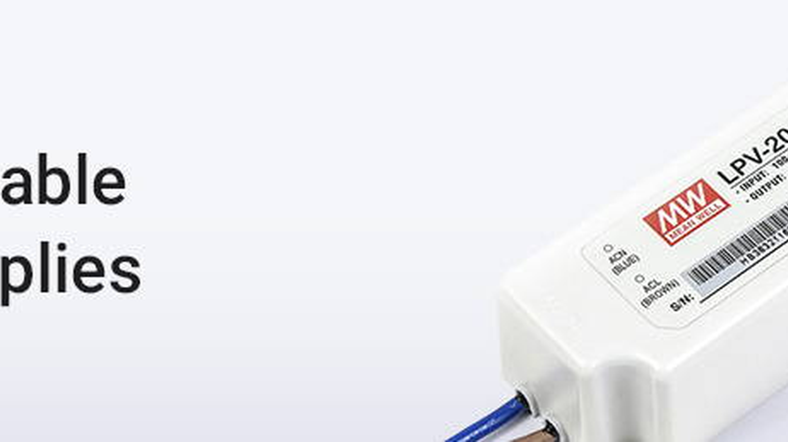
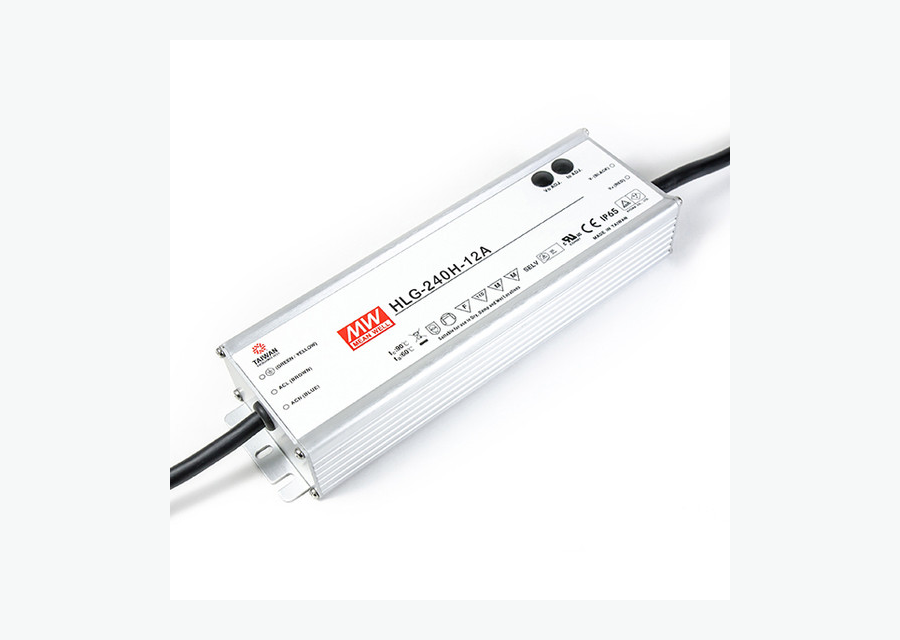
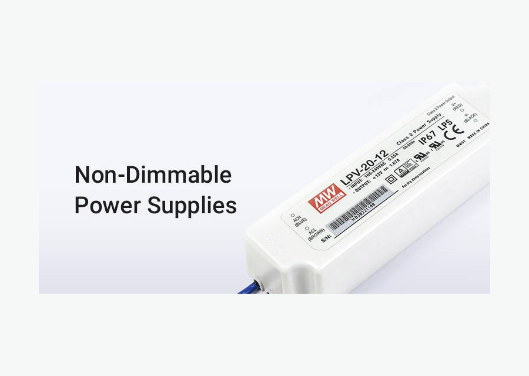
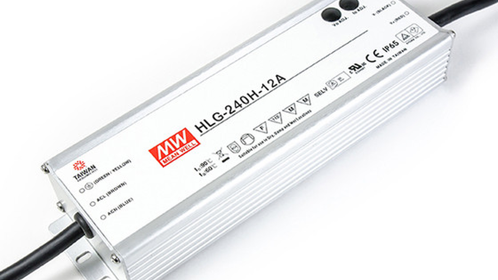

Especificar por potência
60W, 100W, 150W, 200W, 300W e opções sob medida.
Explorar
Coleção SEO • Prioridade Média com validação
Escolha fonte 24V para fita LED, fita LED COB, Neon LED e sistemas lineares com potência compatível com o comprimento e consumo do projeto. Compare fontes para uso interno, instalações comerciais, sancas, vitrines e projetos com controle ou dimerização.
Mapa técnico
Estrutura adaptada para SEO B2B em português do Brasil, com navegação por produto, aplicação, especificação técnica e acessórios do sistema.
60W, 100W, 150W, 200W, 300W e opções sob medida.
ExplorarFita LED COB, Neon LED, perfil linear, sanca e vitrine.
ExplorarInterna, externa, slim, chaveada e dimerizável.
ExplorarComo calcular fonte, queda de tensão e instalação segura.
ExplorarProdutos e filtros
Palavra-chave principal: fonte 24v para led. Secundárias: fonte para fita de led, fonte para fitas de led, fonte de fita led, fonte chaveada 24v, fonte led 24v.

Potência intermediária para trechos residenciais e comerciais.

Formato compacto para sancas, móveis e caixas técnicas.

Proteção para fachadas, neon LED e áreas úmidas.

Guia de especificação
A fonte deve ser escolhida a partir da potência total da instalação. Some o consumo por metro da fita ou luminária, multiplique pelo comprimento usado e adicione uma margem técnica para trabalhar com segurança. A tensão da fonte precisa ser a mesma do produto: uma fita 24V deve usar fonte 24V. Em projetos longos com fita LED, COB ou Neon LED, a fonte correta ajuda a manter o brilho estável e reduz risco de falhas. Também é importante considerar ventilação, local de instalação, proteção contra umidade e compatibilidade com dimmer ou controlador.
Aplicações
As páginas de aplicação devem receber links internos desta coleção para capturar tráfego de cauda longa e orientar o comprador por ambiente.
Alimentação estável para linhas contínuas e trechos maiores.
Planejar aplicaçãoFonte compatível para fachadas, contornos e aplicações RGB.
Planejar aplicaçãoDimensionamento por zonas, cenas e pontos de alimentação.
Planejar aplicaçãoFAQ técnico
Respostas curtas ajudam o usuário a decidir e também estruturam conteúdo para rich results quando a plataforma permitir FAQPage schema.
Multiplique a potência por metro pelo comprimento total e acrescente margem de segurança.
Não. A tensão da fonte deve ser compatível com a tensão da fita ou luminária.
Sim, se a fita COB for 24V e a potência da fonte for suficiente.
Pode, desde que potência total, cabeamento e distribuição estejam corretamente dimensionados.
Cotação B2B
Envie comprimento, tensão, temperatura de cor, ambiente de uso e prazo. Nossa equipe ajuda a combinar produto, fonte, perfil, conector e controle corretos.